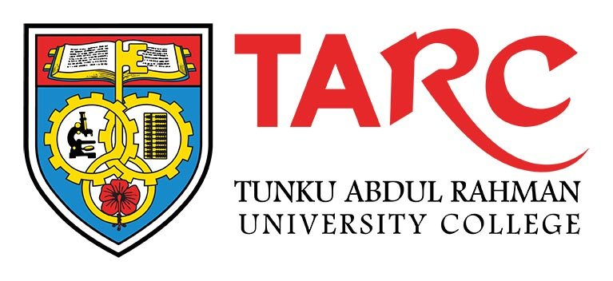

Education Background
Academic Qualification
TUNKU ABDUL RAHMAN UNIVERSITY COLLEGE
Bachelor of science (Hons) in Analytical Chemistry
Nov 2015 – graduated with book prize
Awarded Graduate Chemistry Medal 2015 by INSTITUT KIMIA MALAYSIA
Analytical chemistry is the science of obtaining, processing, and communicating information about the composition and structure of natural and artificial materials. That is to say, analytical chemistry is the combination of art and science of determining what matter is (identification) and how much of it (quantification) exists. Analytical chemistry also focuses on improvements in experimental design, chemometrics, and the creation of new measurement tools to provide better chemical information.
TUNKU ABDUL RAHMAN UNIVERSITY COLLEGE
Diploma in science (Chemistry & Biology)
Sep 2013 – graduated with distinction
This programme aims to produce chemistry and biology graduates at the sub-professional level. It equips students with the necessary basic knowledge of scientifc concepts and theoretical principles to understand chemical and biological phenomena and processes, and trains students to perform standard chemical and biological laboratory procedures. The chemistry syllabi provide a detailed coverage of various topics including atomic and molecular structures, properties of matter, properties and reactions of elements and compounds, analytical techniques and industrial products. The biology syllabi cover a broad spectrum of topics which include cells, energetics, homeostasis and excretion, reproduction and development, biodiversity, ecology, and microbiology.